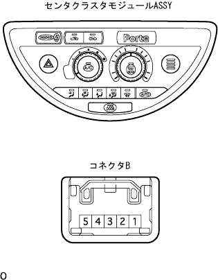

センタクラスタモジュール スイッチ 車上点検
印刷
準備品一覧
1. センタクラスタモジュール スイッチ（ハザードスイッチ）
SST
09082-00030
09083-00150
ハザードスイッチ電圧点検

SST(トヨタエレクトリカルテスター)を使用して、センタクラスタモジュール スイッチ内のハザードスイッチを押したとき、コネクタBの2端子←→ボデーアース間の電圧を点検する。
基準
0V→10-14V